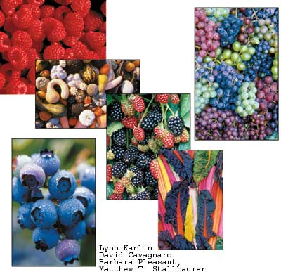
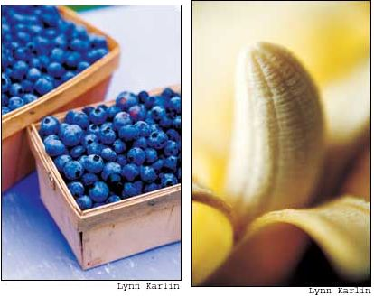
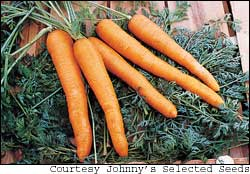
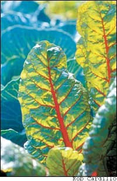
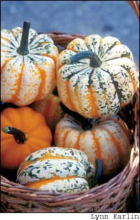
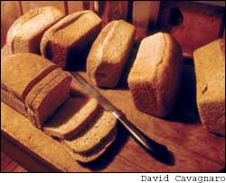
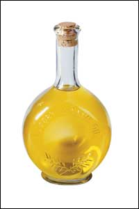
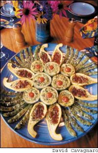
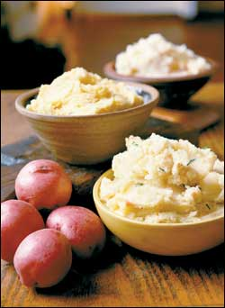

The 33 Greatest Foods For Healthy Living
These fruits, vegetables, grains and nuts will help you and your family stay healthy year around.
By David Feder
February/March 2005
All legitimate roads to a healthy diet have one central crossing point: People are at their healthiest when they eat lots of fruits and vegetables as the majority of their daily food. The undeniable value of fruits and vegetables is something even the protein pushers finally acceded to last year when Atkins diet publicists acknowledged that a high intake of meat and fat is not a healthy diet. With that in mind, we present our 33 Greatest Foods you can eat for daily nutrition and a healthy body.
How We Chose
The study of nutrition is sometimes like the weather: If you wait five minutes, it’ll change. Literally tens of thousands of nutrition studies are published every year - many of them contradictory - and hundreds of diet fads crowd the bookstores.
We reviewed the latest scientific research about which foods really are all that the studies claim and made a list of the top choices, based on flavor and wide appeal - characteristics the nutrition policy experts rarely take into account. With so many fantastic fruits, vegetables and whole grains to choose from, the selection wasn’t easy. In addition to flavor, we looked at such qualifiers as nutrition density, that is, the nutritional “bang for the buck.” We looked at availability - the likelihood all our readers will be able to find fresh examples of the featured food. And finally, we looked at something we call “gardenability.” Because so many Mother Earth News readers are avid gardeners, we want to recommend foods that are easy and fun to grow, too. Use this collection as a springboard for your own common-sense approach to healthy eating and bring more of the fruits, vegetables and other foods you enjoy into your daily diet.
The bulk of our diets should be the stuff we already know as health foods: fruits and vegetables. There’s no overestimating their value. The well-publicized Five-A-Day program developed by the National Cancer Institute encourages Americans to eat five to nine servings of fruits and vegetables every day, but even that number is understated. A better goal for good health is 10 a day. In studies around the world, the populations that ate the greatest amounts of fruits and vegetables, and that combined healthy eating with physical activity, are the populations with the lowest incidences of disease.
Berries and grapes. Berries - blueberries, strawberries, blackberries, raspberries and mulberries - are tiny titans of flavor and nutrition. They’re positively bursting with vitamins, fiber and compounds such as flavonoids, which act as antioxidants to protect against heart and vascular disease, cancer, strokes and even the infirmities of aging. Blueberries are compact sources of the antioxidant ellagic acid, a particularly powerful plant compound. Berries are one of the best sources of anthocyanins, a phytochemical that protects against disease, and which gives fruits and vegetables their alluring red, blue and purple colors. A good rule of thumb is the darker the berry, the higher the concentration of anthocyanins.
In a landmark 2002 study at Tufts University, blueberries were shown to influence reversals of defects in motor function, memory and cognition associated with aging. Rutin, another flavonoid in berries, has shown protective effects against ulcers. The antioxidant quercetin, which resides in the skins of dark berries and grapes, protects against cancers and works best when combined with vitamin C, of which berries have one of the most concentrated sources.
Although little research has been conducted on mulberries specifically, they are rich in resveratrol, another phytochemical that demonstrates cancer-preventative abilities. And like other berries, mulberries have plenty of anthocyanins. Not only is this class of natural compounds protective against cancer and cardiovascular disease, it has even shown antiviral and antibacterial properties. Not bad for a wild berry that is, in many parts of the country, free and abundant. Perhaps the best things about berries are that they can be eaten out of hand, and they go a long way toward satisfying the desire for a sweet, healthy snack.
Grapes, too, pack a lot into a little package. Another concentrated source of vitamin C, they also are among the few natural foods to store sugar in the form of glucose instead of sucrose. This makes them an especially quick and easy energy booster for when you are on the go.
Bananas and mangos. The banana, once the most popular fruit in the world, has been experiencing heavy competition from the mango. Once a hard-to-find delicacy north of the border, mangos now equal or surpass the banana in amount consumed in many areas. But don’t abandon bananas. They are almost as close as you can get to a perfect food. Behind that appealing peel reposes a team of vitamins, minerals and other compounds that are unique to the ubiquitous banana. For instance, bananas contain the amino acid tryptophan, a serotonin precursor. Our body’s serotonin levels are directly related to mood; lower levels can leave us listless and depressed, higher levels elevate our mood. Bananas also contain B vitamins and iron for healthy blood, and they are best known for their generous amounts of potassium and magnesium. Potassium is important for regulating a number of body functions from the kidney and blood pressure to bone health, and magnesium has been studied for its potential as a palliative for migraine headaches. Bananas also are a natural antacid and have been used for centuries to ease stomach woes ranging from nausea to ulcers.
The mango has burst upon the American scene in the past decade or so for a number of reasons - migration of ethnic populations from tropical regions, increased cultivation and lower prices - but the main reason we’ve fallen in love with this once-exotic treat is simple: flavor. Just peeling a sweet, juicy, ripe mango can cause fruit-induced ecstasy.
Mangos contain tryptophan, as well as powerful enzymes such as magneferin, katechol oxidase and lactase, all of which aid in digestion. And mangos are one of the better fruit sources of fiber, thiamin, riboflavin, folate and other B vitamins. Only oranges beat them for calcium, and mangos hover near the top for magnesium, iron, potassium and zinc. Then there are the antioxidant and disease-fighting compounds: Mangos are again one of the top healthy contenders with a whopping 3 grams of carotenes per 150 grams of the fruit (about 1½ cups, cubed).
Dinosaur kale, chard and beet greens. The reason many leafy greens (and this includes broccoli and its sibling rapini) make most “best vegetables” lists is they just can’t be beat for fiber, anticancer compounds (such as carotenoids), minerals (such as iron and selenium) and vitamins (such as A, B, C and K). And they are the best source of folate - the B vitamin that merits special attention for its role in reducing the risk of neural-tube birth defects. Still, we had to choose among the leafy green varieties, so we applied our logic of nutrient density, flavor and availability, and settled on dinosaur kale, chard and beet greens, and spinach as the top choices.
Dinosaur kale - the new star of leafy greens - heads the green group for health. Also known as ‘Lacinato,’ its deep-green, pebble-textured leaves are dense with carotenoids, lycopene and lutein (shown to reduce cataract risk).
Like all kale, Dino also is a mineral powerhouse with loads of iron, zinc, magnesium and potassium, plus just as much calcium as milk.ino kale is now widely available, and a great way to prepare it is to wash and drain the greens, then lightly sauté them in hot olive oil with seeded rye bread crumbs and a twist of freshly ground pepper.
Next come chard and beet greens. These nutrient-rich cousins to spinach can be prepared the same way as dino kale, and they contain as much or more iron. One cup of cooked chard or beet greens has about double your needs of the antioxidant vitamin A.
Roots and tubers. The root (and tuber) vegetables - carrots, parsnips, beets, potatoes, yams and their kin - are receiving a well-deserved renaissance at the dinner table in spite of trendy low-carb diets. This is because they seem to have it all: vitamins, minerals, fiber and other beneficial compounds in generous amounts. One of the best fiber sources of all the root vegetables is the parsnip. This once-overlooked root, resembling a pale-beige carrot, weighs in at 4 grams of fiber per cooked half cup. Parsnips are an excellent source of vitamin C and folate, and also contain useful amounts of beta carotene, vitamins B1 and B3, potassium, phosphorous and iron. Studies show that foods rich in folate, beta carotene and vitamin C effectively lower levels of a compound called homocysteine, which is strongly related to an increased risk of heart disease.
Root vegetables are easy to prepare for maximum flavor and health benefit, and combining two or more puts color as well as flavor and health on the menu. Steam a half pound each of peeled or scrubbed carrots and parsnips. Separate the carrots and parsnips and mash each with 2 teaspoons roasted peanut oil and a teaspoon of molasses. Then swirl the two together in a large serving bowl.
Whole grains, beans, nuts and squash. Grains, beans, tree nuts and squash are excellent sources of complex carbohydrates, plus they are replete with protein, minerals and vitamins (especially the B vitamins). Nuts also are high in the good monounsaturated fats that support heart health along with satiety, and walnuts are one of the best plant sources of heart-healthy omega-3 fatty acids you can eat. All nuts have incredible value as a food when it comes to nutrient density.
On the grain side, toasted wheat berries are making amber waves for their versatility, functioning as a nutty-crunchy snack food, a sprinkle-on for salads instead of croutons and a stir-in for soups. Boiled, they add a flavor reminiscent of hazelnuts to slow-cooked hot cereals and pilafs. Another great grain given too little attention in our culture is barley. As grains go, barley has more fiber, protein and iron per gram than almost any other.
On the bean side, fava and garbanzo beans (chickpeas) have enjoyed increased popularity as the Mediterranean influence at our tables has grown. They are extremely good sources for fiber, iron and protein. Steam either or both kinds of beans with potatoes, and mash them with olive oil, sea salt and freshly ground pepper for an energy-rich meal.
The soybean has probably been written about more than any other food in recent memory. An unbeatable protein source and also vitamin-packed, soy is extremely versatile. The edamame craze that traveled to our shores from Japan a few years ago is the tofu-icing on the cake. Steamed edamame - green soy beans - are so fun to just pop in your mouth as a snack (or serve as a side dish) that they make this well-promoted legume fun again.
Acorn, butternut and other winter squashes are exceptional sources of complex carbohydrates and fiber. All squashes are also extremely versatile. You can grill or sauté them in olive oil. Try baking them with various types of stuffing.
Meat, poultry and fish. Your diet should include 50 to 65 grams (that’s only about 2 ounces) of protein every day, which you can get from red meat, poultry, fish, eggs, beans and nuts. (Most of us eat more protein than we need.) Chicken, turkey and fish are better protein sources than red meat because they contain less cholesterol and saturated fat. And pasture-raised poultry and eggs are even more nutritious (and often taste better, too). Meat and eggs from birds raised with access to pasture have higher amounts of vitamin E, vitamin A, folic acid, carotenoids and a better ratio of essential omega-3 fatty acids. Also, animals raised on pasture usually don’t require the routine antibiotics used in confinement systems - yet another reason that grass-fed poultry is a top healthy choice.
Fish is an outstanding source of protein, and many cold-water fish are a top source of essential omega-3 fatty acids that protect against heart disease and strokes. Studies have found that eating fish once a week or more can reduce the risk of heart attacks by 30 percent. There are also preliminary studies that suggest omega-3s may protect against breast, colon and prostate cancers. The richest fish sources of omega-3s are anchovies, herring, salmon, striped bass, sardines, mackerel, rainbow trout, oysters and smelt. Some species, including swordfish, shark and large tuna, should be avoided because they are often contaminated with high levels of toxic mercury.
Olive oil and peanut oil. One good thing about carb-bashing diets: They have taken the heat off oils and other sources of fat. Essential sources of energy, fats also are critical for hormones, nerve function and transporting multiple nutrients in the body. Unfortunately, they also are excellent sources of high-calorie energy for storage. This does not mean you should completely avoid them. Remember, fats are necessary for human health - just enjoy them in moderation.
Olive oil lives up to its hype as one of the most healthful and helpful fat sources. Besides the well-publicized benefits of the omega-3 monounsaturated fatty acids, which help reduce cholesterol in the blood, olive oil is a source of iron, the antioxidant vitamins A, C, D, E and K, plus the B vitamins thiamin and riboflavin. This most ancient of cultivated food oils is also being studied for its possible effectiveness in aiding calcium metabolism and protecting against infections, ulcers and other gastric dysfunctions. Olive oil is at its best when used without cooking, such as for dipping bread or on salads, pastas or cooked vegetables.
Next up is peanut oil, which imparts a faint nutty flavor to foods. With natural antioxidant capacity and a high smoking point, it’s one of the best oils for cooking. It, too, is a good source of monounsaturated fat. Other nut oils, especially walnut oil, are high in monounsaturated fats, but they have low smoking points and burn easily. For all these healthful oils, make sure you buy products specifically labeled “unrefined” or “cold-pressed.” The refining process, which involves bleaching or other chemical treatments to extend shelf life, reduces flavor and nutrients.
Sweeteners
Now, let’s finish with the sweet stuff. We should treat sugar as, well, a treat. Liquid sweeteners - molasses, sorghum, rice syrup, maple syrup - are not that much better for you than sugar, but because they have such rich, distinctive flavors, you can use less of them to satisfy your sweet cravings. Brown rice syrup is a little less sweet than table sugar but has more complex carbohydrates. Because it is so mildly flavored, it can be substituted for table sugar. Blackstrap molasses, although made from cane sugar, brings important minerals such as iron and magnesium to the table, but it’s too strongly flavored to use in place of table sugar. It does bring marvelous flavor depths to baked goods, though. You also can use it instead of brown sugar for root vegetable dishes; try drizzling a couple of teaspoons into steamed parsnips as you mash them together.
Avoid highly processed “junk food” and choose Real Food - fresh fruits and vegetables, poultry, fish and healthful nuts, grains, oils and sweeteners described above. If you make these nutrient-dense foods a regular focus of your diet, you’ll feel better and live longer.
David Feder is a journalist and a registered dietitian living in Des Moines, Iowa.
Potatoes - Don’t Knock ’em ... Mash ’em!
Pity the poor potato. True, it is the No. 1 vegetable in the United States, but that has been more a reflection of the injury the food industry has perpetrated on this homely, but effective, staple starch - with high-temperature treatments such as frying and baking. And that’s where the critics come in. When subjected to high temperatures, the potato’s starch is broken into smaller fractions, leading to faster metabolization and less efficient storage of its sugar molecules in our bodies.
But when the potato is boiled, the opposite occurs. The potato retains starch in large molecules that take longer to break down in the stomach, and glycogen is stored more efficiently in our livers and muscles. It is the glycogen form of carbohydrate that our bodies use best for energy and endurance. For a nearly complete one-dish meal, scrub and steam 1 pound of potatoes. Mash them with 1 cup of cooked chickpeas (garbanzo beans), 2 to 3 tablespoons olive oil and a half cup of chopped cilantro, basil or parsley. Season to taste with salt and pepper.
- Mark Anthony, who holds a Ph.D. in Nutritional Sciences and is the author of Gut Instinct: Diet’s Missing Link (www.dietsmissinglink.com).
|
 Left: Blueberries protect against heart and vascular disease. Right Bananas contain generous amounts of potassium, which helps regulate kidney functions and blood pressure, among other important bodily functions. |
 Carrots lower the risk of heart disease; squash is a great source of complex carbohydrates and carotenes; kale is a mineral powerhouse; and parsnips are are an excellent source of fiber. |
 |
|
 |
 |
|
|
 |
 |
 |
 |
 |
|